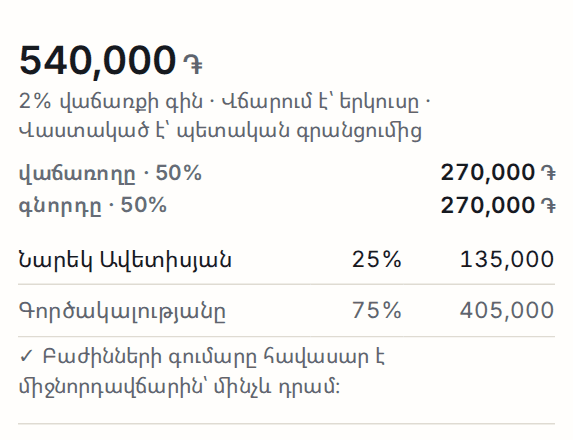

Անշարժ գույքի գործակալության գրասենյակ
Գործակալը կողմ չէ ո՛չ առուվաճառքի պայմանագրին, ո՛չ պետական գրանցմանը։ Նրա միջնորդավճարի պահանջը հենվում է մեկ բանի վրա՝ որ հենց այս գործակալությունը հենց այս գույքը ցույց է տվել հենց այս հաճախորդին հենց այս օրը։
Այդ գրառումը մինչ օրս պահվում է հեռախոսի նամակագրության մեջ, աղյուսակում կամ ընդհանրապես չի պահվում։ Հայաստանում MLS չկա, և հայկական արտադրության անշարժ գույքի CRM հետազոտության ընթացքում չգտնվեց։ Իսկ ընդհանուր CRM-ը հարցնում է «ո՞ր փուլում է գործարքը» և չի հարցնում «ո՞ւմ որքան է հասնում այս գործարքից և ո՞ր օրվանից» — մինչդեռ հենց դա է գրասենյակի հարցը։
Այս էջում այլ թիվ չկա։ Շուկայի ծավալ, օգտագործողների քանակ և միջնորդավճարի «սովորական» տոկոս չենք գրում, որովհետև չունենք։
CRM-ը վարում է ձագարը։ ԱրմԷստեյտը վարում է փողը և ապացույցը՝ ո՞ր ցուցադրությունն է հիմնավորում պահանջը, ո՞ր դեպքն է միջնորդավճարը դարձրել վաստակած, ո՞ւմ որքան է մնացել վճարելու։ Ամեն թիվ ունի իր տողը մատյանում, և ամեն տող՝ իր հիմնավորումը։
«Ռիելթորական գործունեության մասին» օրենքի նախագիծը կպահանջեր գրավոր պայմանագիր ամեն հաճախորդի հետ, փաստաթղթերի տասնամյա պահպանում և գրանցում պետական հարթակում։ Այն ուժի մեջ լինելը հաստատված չէ, ուստի ԱրմԷստեյտը ոչինչ չի պարտադրում. այն պահում է հենց այն գրառումը, որը կպահանջվեր, և ամեն էկրանին գրում է, որ օրենքն ուժի մեջ չէ։
Շարքի ամենանոր ծրագիրն է և դեռ կառուցվում է։ Աշխատում է՝ գույք, հաճախորդներ, գործակալներ, պայմանագրեր, ցուցադրություններ, առաջարկներ, գործարքի յոթ փուլը, վճարումները և հինգ փաստաթուղթը։ Բացվում է առանց ինտերնետի, հեռախոսի վրա։ Դեռ չկա. համաժամացումը և գործակալի սարքը՝ այս պահին մեկ սարք, միայն տնօրենը. լուսանկարներ. կնքման ստուգաթերթի սեփական դաշտերը։ Տպվող փաստաթղթերը իրավաբանի կողմից ստուգված չեն։
